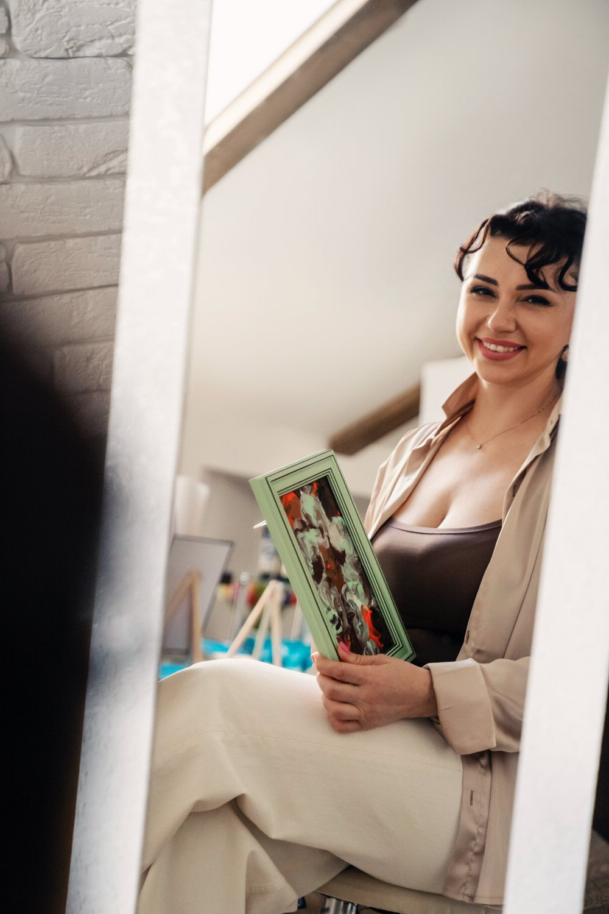

Індивідуально в студії
26 000 грн
Особистий простір тет-а-тет із Діаною — найглибший формат занурення.
ЗаписатисяДосвід зустрічі із собою через рух, дотик і колір. Ви створюєте власну роботу тілом — без вміння малювати, без оцінок. У безпечному просторі відпускаєте контроль, проживаєте емоції й виходите з відчуттям свободи та цілісності. Залишається не лише картина, а новий вимір себе.

Особистий простір тет-а-тет із Діаною — найглибший формат занурення.
ЗаписатисяСпільна практика в безпечному жіночому колі — досвід, що єднає.
ЗаписатисяТа сама практика у себе вдома, з особистим веденням через відеозвʼязок.
ЗаписатисяУсі практики платні. Для офлайн-форматів матеріали (полотно, фарби) включені у вартість. Після бронювання на Calendly ви отримаєте посилання на оплату.
«Я прийшла «просто спробувати», а пішла іншою людиною. Уперше за роки дозволила собі не бути ідеальною — і це звільняє.»
«Думала, що не вмію малювати і зроблю щось негарне. Виявилось, річ не в красі, а в чесності. Моя робота тепер висить удома як нагадування.»
«Це не про живопис, це про повернення до себе. Плакала і сміялася в один день. Дуже дбайливий супровід Діани.»
«Найтерапевтичніші дві години за останній час. Тіло згадало, як це — бути вільним.»
«Ішла онлайн і боялася, що буде «не те». Але відчуття присутності й підтримки було повним. Рекомендую кожній жінці.»